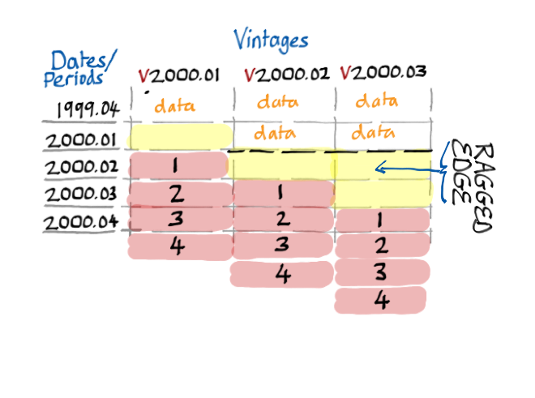
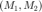
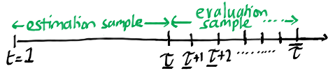

PROFOR Overview
Contents
Preliminaries - Object Orientated Structure of Program
A researcher does not need to understand concepts from Object Orientated Programming (OOP) to be productive with PROFOR. Nevertheless, OOP concepts are used to treat classes and instances as objects, and their 'functions' as methods and class properties, respectively.
To learn a little about OOP (most code in economics is written functionally), take a glance at Wikipedia.
The PROFOR Toolbox
The PROFOR toolbox is structured around two fundamental builiding blocks:
- Model: Class to store everything needed to estimate and forecast an individual model on a given data set.
- Profor: Class that combines and determines how forecasts are evaluated.
In addition, once all this is done, a Reporting class allows the user to evaluate forecasts using various methods.
Model Class
A Model class contains all that is needed to estimate a model:
- Data (Tsdata)
- Settings (Batch)
The data have to be converted to PROFOR's data class, Tsdata. This is a container for methods to transform the data. See the Processing Data help for some examples on how this is done.
For each individual type of model (e.g. VAR or BVAR), the settings are restricted by the Batch class. Thus, the initial set-up of the models is restricted to a set of values that make sense to that particular modelling class. See the various example batch setups in the Running Models, and Estimating Models and forecasting.

Most of the properties of the Tsdata and Batch class can be adjusted by the user. Once these two classes are provided and correctly specified, the user can estimate the model and generate forecasts. Doing so will populate the estimation and forecasting classes of the Model class.
In the PROFOR Toolbox, all individual models are initiated and run using the Model class container. The specifics of the settings, e.g., the Batch class, might change from one model to the next (e.g., VAR versus BVAR), but they are still run using the Model container.
Model - State Space Formulation: Link from Tsdata & Batch to Estimation & Forecasting
The link from initialising the Model class when setting Batch and Tsdata to the output of the model estimation and forecasting is achieved by specifying the model in state space.
The full specification of the state-space system is detailed in Models and Structures.
However estimated, all models end up in this format. Thus, aiding the combination and comparison of models subsequently.
From this common state-space formulation a forecast is churned out and stored in the forecast property which is a Forecasting class.
Within the forecasting class there is a property predictionsY, where all the forecasting results are stored in a common Tsdataforecast class. All forecasts, are stored with this Tsdataforecast class in order to aid comparability.
Profor Class
The Profor class is simply a wrapper class to perform model evaulation and combination with the ability to take into account the real-time structure of data sources. If the researcher supplies the Profor class with real-time data then, in addition to the evaluation and combination of models for a given vintage, PROFOR will look to the supplied data source, load the nearest data to the requested vintage and run model evaluation and combination for this vintage. This occurs recursively over the evaulation sample.
Thus, you can think of the Profor class of doing 2 main things.
- Recursive real-time estimation / forecasting / evaluation.
- Model combination with recursive real-time estimation / forecasting / evaluation.
Profor: Real-time capabilities
The DEMO version of PROFOR handles quarterly data. Generally, when dealing with real-time quarterly data the current quarter's data are unavailable. Below is a typical real-time data set. It shows data from vintage = V2000.01 - V2000.03. Typically, macro data will contain data with some lag L, as drawn here the vintages V2000.01 & V2000.02 have a one-period lag, and V2000.04 has a two-period lag.

PROFOR can handle the reading of data with ragged edges and will also deal with forecasting by generating the required h-step iterative forecast to achieve the required forecast.
Profor: Combination
PROFOR also allows for the combination of forecasts. Suppose the researcher has produced forecasts from two models,  with a given data vintage, let's say . Shown in the figure below, where the estimation sample (for parameter estimation) and the out of sample evaluation sample are both specified explicitly.

The combined Model class uses the forecasts produced by and through the evaluation sample, from , to construct (out of sample) weights and predictive scores (e.g. average logarithmic score).
Of course, the weights and scores computed by the combined Model class will differ at a given date if the data used to estimate the models are revised. Both and need to be estimated for each vintage, and so does the combined Model class.
Hence, Profor aims to replicate real-time model estimation and combination exercises in a fairly straightforward manner.
Report Class
Once all estimation, scoring and weighting are done, the researcher will want to look at some output! This is easy, simply supply the Report class with either individual Model classes or Profor classes that have been estimated and used to produce forecasts.
See the help section on, To Analyse Results, Construct a Report, for more information.